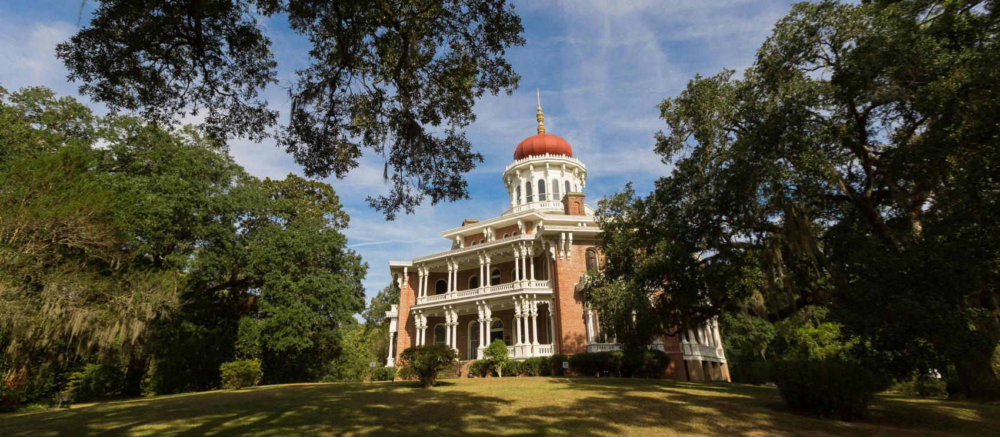
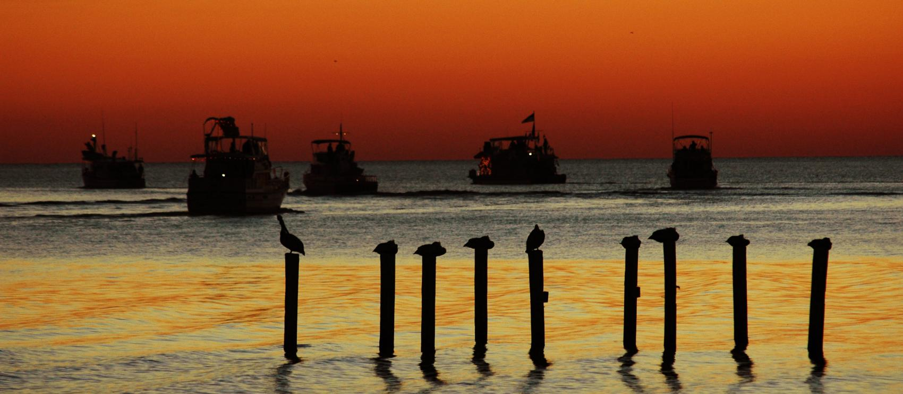
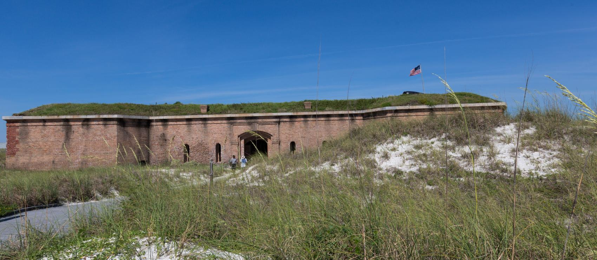
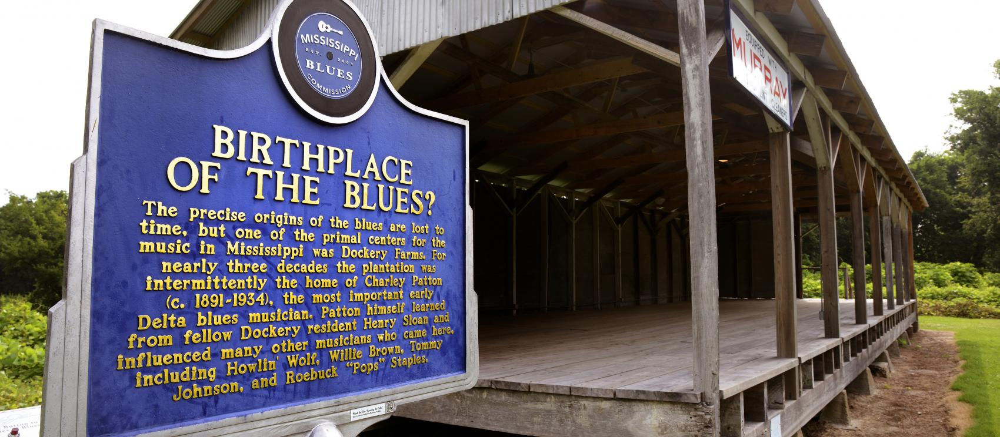
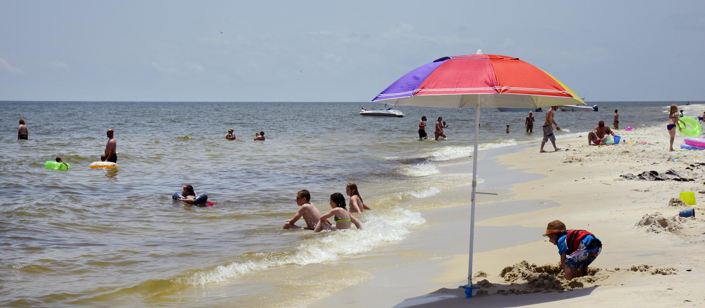
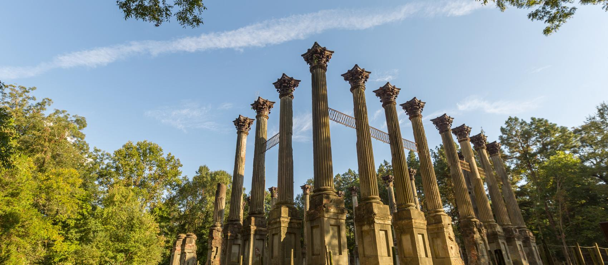
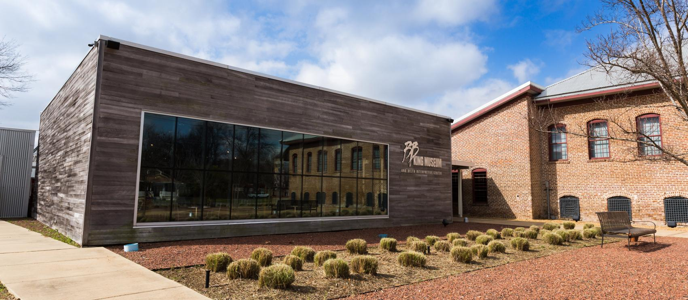
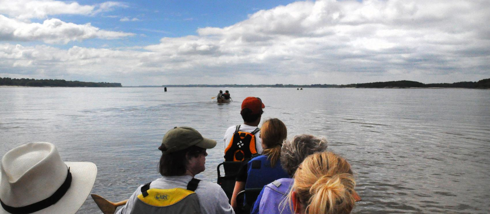

-
미국 공식 웹사이트 미시시피주

건축물이 즐비한 나체즈에서 국립사적지로 지정된 플렌 테이션 가운데 하나인 롱우드 -
미국 공식 웹사이트 미시시피주
잭슨에 위치한 주 의사당 -
미국 공식 웹사이트 미시시피주

해가 지는 바다를 항해하는 빌럭시의 선박들 -
미국 공식 웹사이트 미시시피주

웨스트 쉽 아일랜드 해변의 명물인 오래된 매사추세츠 요새 -
미국 공식 웹사이트 미시시피주

클리블랜드의 도커리 팜스에 있는 미시시피 블루스 트레일 이정표즈 -
미국 공식 웹사이트 미시시피주

쉽 아일랜드의 평행사도 해변에서 즐거운 시간을 보내는 가족 -
미국 공식 웹사이트 미시시피주

나체즈 트레이스 파크웨이를 따라 자리한 과거 플랜테이션 부지인 19세기 윈저 저택의 잔해 -
미국 공식 웹사이트 미시시피주

미시시피주 인디애놀라에 있는 B.B. 킹 박물관 및 델타 자료관 -
미국 공식 웹사이트 미시시피주

쿼포 카누 컴퍼니와 함께 미시시피강 헤쳐나가 보기
 미시시피 델타:
블루스의 고향
미시시피 델타:
블루스의 고향

 미국 여행 정보
미국 여행 정보